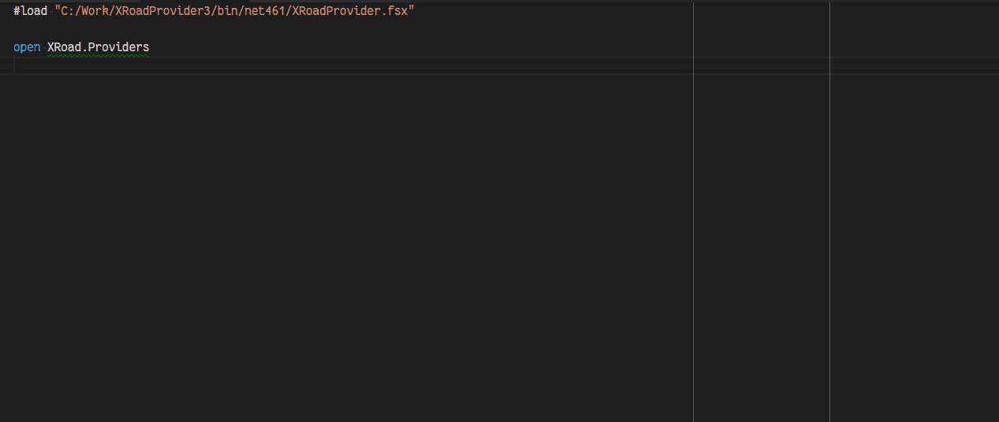

XRoadServer6 Type Provider
XRoadServer6 type provider implements supporting functionality for easier X-Road
service discovery and exploration on X-Road v6 security server. There is also
similar type provider for previous version of X-Road security server, but with
adaption of newer security server, the older one is becoming obsolete so that
branch is not first maintainment priority. This article continues with newer
type provider.
XRoadServer6 Type Provider in Action
Sample session of using XRoadServer6 type provider for service discovery:

Configuring XRoadServer6 Type Provider
Generally XRoadServer6 type provider is initialized with following line:
type Browse = XRoadServer6<"http://server-uri", "ee-dev", "GOV", "71111111", "generic-consumer">
The parameters used in initialization of the type provider are described in the following table:
| Parameter name | Type | Required | Default value | Description |
|---|---|---|---|---|
SecurityServerUri |
String |
Yes | - | X-Road security server uri which is used to connect to that X-Road instance. |
XRoadInstance |
String |
Yes | - | Code identifying the instance of X-Road system. |
MemberClass |
String |
Yes | - | Member class that is used in client identifier in X-Road request. |
MemberCode |
String |
Yes | - | Member code that is used in client identifier in X-Road requests. |
SubsystemCode |
String |
No | "" |
Subsystem code that is used in client identifier in X-Road requests. |
ForceRefresh |
Boolean |
No | false |
When true, forces type provider to refresh data from security server. |
The first five parameters handle identification, so and are required by security server to enable usage of metaservices on which the type provider relies.
Last parameter is of technical kind and for lazy users who do not want to restart their IDE for WSDL reloading (by default resulting types are cached and retrieved from cache, but this parameter forces type provider to resolve service description again even if there is a cached version available).
Returned Type Structure
The return type of XRoadServer6 type provider is layed out according to hierarchical structure of X-Road
members. Root type has three members:
Identifier: Instance of XRoadMemberIdentifier type which is initialized to the parameters used for type provider construction.CentralServices: List of available central services on current X-Road instance.Producers: List of registered producers on current X-Road instance.
The Producers subtype categorizes known X-Road producers by their member class value (for example COM
identifies commercial producers, GOV goverment producers, etc.).
Under each member class category all the member are listed by their name. Each member contains its subsystems and services which are accompanied by their identifiers. Service value is literal string which contains WSDL uri of the service.
Interaction with XRoadProducer Type Provider
The properties provided by XRoadServer6 type provider have suitable type which allows to use them
with XRoadProducer type provider to initialize service interfaces for the services.
#load "C:/Work/XRoadProvider3/bin/net461/XRoadProvider.fsx"
open XRoad
open XRoad.Providers
open System
type Browse = XRoadServer6<"http://xtee-ts-arendus-v5-5.just.ee", "ee-dev", "GOV", "70000310", "generic-consumer">
type Ads = Browse.Producers.GOV.``Maa-amet (70003098)``.``SUBSYSTEM:ads``
type AdsAadrJarglased = XRoadProducer<Ads.``SERVICE:ADSaadrjarglased``>
let header = XRoadHeader()
header.Client <- Browse.Identifier
header.Producer <- Ads.Identifier
header.ProtocolVersion <- "4.0"
let request = AdsAadrJarglased.DefinedTypes.WwwMaaametEe
let port = AdsAadrJarglased.xroadeuService.xroadeuServicePort(Uri("http://xtee-ts-arendus-v5-5.just.ee"))
let response = port.ADSaadrjarglased(header, adrId=10I)
printfn "Result: %A" response // => Result: <null>
In this sample we are using output of XRoadServer6 type provider to pass ADSaadrjarglased service
WSDL uri to XRoadProducer type provider. Also, we are using the identifier which was defined to
browse the security server, as our Client identifier in X-Road header part. For producer identifier
we can use Ads.Identifier that was also provided by XRoadServer6 type provider.
So by having access to working security server and knowing only our own identifier values, it was possible to make a service request to another X-Road service provider with all the information retrieved from security server itself (with a little help from type provider).